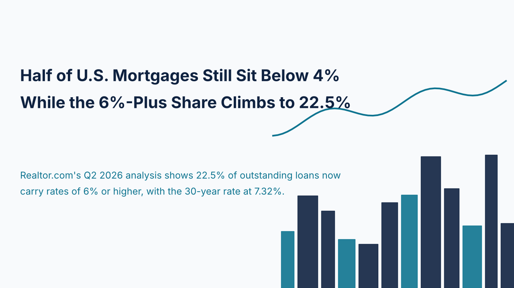
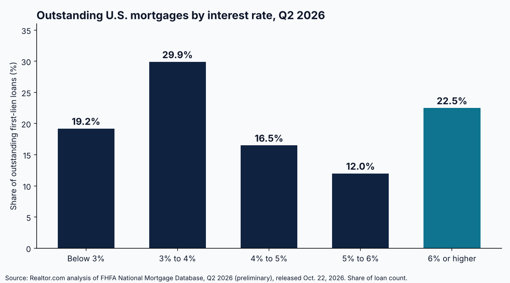

Half of U.S. Mortgages Still Sit Below 4% While the 6%-Plus Share Climbs to 22.5%

Nearly half of the mortgages outstanding in the United States still carry rates below 4%, and that fact continues to shape how much housing stock reaches the market. Realtor.com's analysis of the Federal Housing Finance Agency's National Mortgage Database, released October 22, 2026, found that 49.1% of outstanding first-lien loans were below 4% in the second quarter of 2026, including 19.2% below 3%. Another 16.5% sat between 4% and 5%, and 12.0% between 5% and 6%. Counting every loan below 5%, the share was 65.6%.
The high end of the distribution is growing. Loans at 6% or higher made up 22.5% of the pool, up 0.3 percentage points from the prior quarter and 2.3 points from a year earlier, according to National Mortgage Professional's summary of the release. Realtor.com's scenario model, which assumes 3.1 million new loans over the next year all originated at 6% or higher, puts that share at roughly 27% to 28.5% by mid-2027. That is a modeled scenario, not an observed result, and it assumes rates stay elevated.

The age of the loan book explains much of the persistence. Loans originated between July 2019 and June 2022 now represent 42.8% of outstanding mortgages, a record and up from 40.8% in the prior quarter. Loans originated since July 2022 account for only 27.8%. Owners holding pandemic-era mortgages have a financial reason to stay put, which restrains voluntary listings.
Current pricing widens the gap. Freddie Mac's survey put the 30-year fixed rate at 7.32% for the week of October 22, 2026, down from 7.40% the prior week and well above 6.19% a year earlier. Redfin's October 22 report, as summarized by Real Estate News, showed total inventory up 0.1% week over week and 2.1% year over year, while new listings fell 1.4% week over week and 2.7% year over year. The Mortgage Bankers Association's purchase index was down 18% year over year for the week ending October 16.
For investors and lenders, the implication is that supply remains constrained by seller behavior rather than by a lack of demand alone, and that borrowers entering the market are taking on rates far above the portfolio average. A buyer financing at 7.32% is pricing debt more than three percentage points above the 49.1% of owners locked in below 4%. That difference tends to compress debt service coverage on rental acquisitions, so deal underwriting this week should assume current rates rather than the averages visible in the existing stock.
The lock-in effect is easing only slowly. With roughly two thirds of loans still below 5% and new originations skewing above 6%, the market is shifting gradually from a few very cheap loans toward a more evenly priced stock. Investors who underwrite to current rates, and verify coverage and cash requirements early, are better positioned to act when well-priced inventory appears.